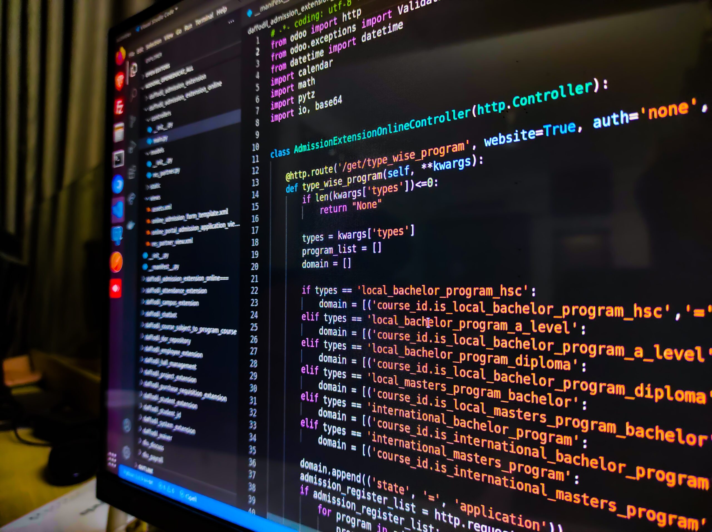

There are countless jobs that require computer science skills. Here we have put
three different options, that are all on wildly different ends of the spectrum. They demonstrate
the great diversity of opportunities found within this field, and hopefully inspire your choices.
Click on any of the following links to take you to that part of the page.
Software Engineer
Video Game Developer
Computer Forensics Analyst
Software Engineer

What is a Software Engineer?
A software engineer designs, develops and tests software applications, creating coding and software programs
in order to create a variety of products, such as websites, games, operating systems, etc.
What you do as a software engineer has a lot to do with where you are employed, and what you are tasked to
create and specialize in.
Responsibilities
Here are some of the responsibilities and expectations associated with the job.
-
Writing and testing code
-
Collaborating with other engineers and programmers
-
Designing and maintaining software systems
-
Spearheading software and product development
-
Consulting and interacting with clients
-
Testing new software programs
-
Keeping code organized and legible for others
-
Thinking critically about problem solving
-
Contributing to the workforce and final products
-
Making user friendly products
Average Salary
|
Local (Ottawa) |
National |
International |
| Low Average |
$ 73 000 |
$ 103 891 |
$ 63 500 |
| Middle Average |
$ 83 944 |
$ 153 709 |
$ 147 524 |
| High Average |
$ 104 000 |
$ 157 153 |
$ 205 500 |
Trends
Current trends are affecting what companies want from software engineers, and what is expected from you right now. Although the principles of software engineering remain the same, the details of the job may change. Three major areas where trends are currently shifting and therefore affecting the job market are…
-
Use of AI
-
With generative AI able to create simple code programs quickly, the demand for software engineers regarding basics has declined. However, they are always looking for more people to engineer this technology, and expand the field.
-
Data Security Concerns
-
Cyber threats are growing, leading companies to invest more in data security, as users feel their personal information is threatened. There have been over 4 000 since COVID-19. Software engineers are being directed more towards cybersecurity as time goes on.
-
Commuting
-
Due to COVID-19, many companies shifted to a work-from-home structure that remained after the pandemic. The expectation for those who can easily work remotely to commute has greatly declined.
Video Game Developer

What is a Video Game Developer?
Video game developers work with artists and storyboarders to create the game’s defining features. They code and create the functions of the game, facilitating user interaction. They can also focus on less code-orientated aspects, such as crafting characters, objectives, levels and settings as they collaborate with a team of developers.
Responsibilities
Here are some of the responsibilities and expectations associated with the job.
-
Consider user experience and interpretation
-
Translate requirements into clean and efficient code
-
Construct the base or engine on which the game will run
-
Produce prototypes of gameplay ideas and features
-
Generate game scripts and storyboards
-
Animate characters and objects through code
-
Develop schedules and determine project milestones
-
Maintain code, fix bugs and solve recurring problems
-
Collaborate and communicate well with other team members
Average Salary
|
Local (Ottawa) |
National |
International |
| Low Average |
$ 43 000 |
$ 87 750 |
$ 32 500 |
| Middle Average |
$ 53 000 |
$ 120 570 |
$ 108 471 |
| High Average |
$ 65 000 |
$ 149 693 |
$ 180 000 |
Trends
The video gaming industry is one of the most profitable, and companies are constantly adjusting to what consumers want. While the ideas we’ve already familiarized you with will remain largely unchanged, what you will be applying your skills to might. Three major areas where trends are currently shifting and therefore affecting the job market are…
-
Augmented and Virtual Reality
-
As AR and VR become more accessible to the common public, game developers will be expected to consider the nature of virtual reality while designing games. You may have to consider aspects of a game that would otherwise be fine, being disorientating in VR format. Developers will be expected to work around new challenges presented.
-
Indie Games
-
Indie games are becoming more and more prevalent, leading to an increase in job diversity and opportunity for game developers, as well as higher chances of success for independently developed games. Platforms such as Steam are great contributors to this, but the added variety also increases competition, something for game developers to consider.
-
Esports
-
As esports increase in popularity, developers may want to consider gearing their products towards the competitive industry of gaming.
Computer Forensics Analyst
What is a Computer Forensics Analyst?
A Computer Forensics Analyst uses investigative methods to analyze evidence from computers, networks, and other data storage devices. Their work is similar to that of a typical Forensics Analyst, but geared towards evidence that can be found on computers and other technological devices, in order to help with investigations, persecutions and other legal matters.
Responsibilities
Here are some of the responsibilities and expectations associated with the job.
-
Recover and secure data
-
Report findings
-
Collect crime scene or incident information
-
Identify vulnerabilities in security systems
-
Gather evidence from cyber crimes
-
Investigate online scams and fraud
-
Follow electronic data trails
-
Investigate internet offenses and cyber crime
Average Salary
|
Local (Ottawa) |
National |
International |
| Low Average |
$ 65 000 |
$ 71 201 |
$ 50 000 |
| Middle Average |
$ 82 000 |
$ 89 681 |
$ 80 000 |
| High Average |
$ 104 000 |
$ 139 913 |
$ 138 000 |
Trends
-
AI and Machine Learning
-
As AI advances and weaves its way into new fields, digital forensics is being revolutionized by its involvement. Tedious tasks can now be automated, enhancing data analysis. They allow forensics investigators to take on more work, better detect anomalies, and work more efficiently.
-
Internet Forensics
-
As the internet continues to increase in size and therefore complexity, it poses new challenges for computer forensics analysts who now have to take into consideration the linking of billions of devices, and the vast amounts of information that could pose valuable to a single investigation, spread across multiple devices and sometimes locations.
-
Mobile Device Forensics Evolution
-
With advancements in technology, forensics analysts may have to adapt and predict future challenges posed by new technologies. Mobile forensics is a complex step-up from typical computer forensics, posing new challenges such as the compatibility of different operating systems, cross platform compatibility, online communication, and more. Future computer forensics analysts will have to navigate these new advancements.
Overall Trends
In summary, the main trends affecting computer science based on careers listed above are…
-
Use of AI
-
Data Security Concerns
-
Commuting and Workplace Shifts
-
Augmented and Virtual Reality
-
Indie Game Prevelance and Development
-
Internet Forensics and the Effects of Online Connectivity
Some of the most prevalent trends affecting computer science are AI, cloud computing and blockchain. AI advancements - while speeding up the programming process and increasing efficiency
- also pose threats to the demand for computer scientists. The job market may shrink, as companies rely more heavily on artificial intelligence, needing less human monitoring resources.
Those pursuing degrees in the fields of computer science will have to navigate their future job prospects.
Cloud computing is also greatly influencing the computer science job market, and
the future of the field. Cloud computing refers to the delivery of computing services over the internet, speeding up communication, efficiency and service. It makes collaborating on code easier,
but also increases the complexity of future jobs, due to the many factors that now need to be considered on a global scale.
Blockchains are also influencing computer science as a field. A blockchain
is defined as a “digitally distributed, decentralized, public ledger that exists across a network”. Blockchain technology in computer science offers decentralized and secure frameworks for
applications, improves security and efficiency, and is likely to lead more people to invest in computer science due to its growing opportunities.